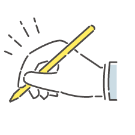

-

デザイン
題点を解決できるよう、PhotoshopやIllustratorを用い、目的やターゲットにあったWebサイトのデザインをお作りいたします。
-

コーディング
デザインをもとにHTMLやCSSでコーディングを行い、Javascriptを用いて動きをつけていきます。また、スマートフォンに対応したサイトの作成も可能です。
-
翻訳
英語・ドイツ語・フランス語の翻訳と、英語のみの同時通訳通が可能です。業界歴は約５年ほどになります。分かりやすく伝わる翻訳を心がけています。